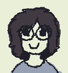

Ray Palomino
Hi, I'm Ray!
I'm a Japanese-American artist born in Japan and lived in 5 different states in the US. I am currently a student at San Jose State University studying Digital Media Arts. I work with many different mediums, including Illustration, 2D and 3D animation, 3D modeling, photography, and front-end programming.
Artist Statement
I am a 2D and 3D digital artist that focuses on storytelling to invoke an emotional reaction from my audience. My work incorporates character-driven stories and compositions through different mediums. My work guides me in understanding myself and the world around me. It is also a way I can invite the audience to question their perception of the world and how they feel about it.
My work utilizes color theory with its deliberate choice of shadows, colors for the characters and filters to invoke an emotion with my pieces. I also keep in mind the composition of the piece with the placement of characters, background, foreground and mid ground to elevate the story telling within just the composition. Finally, I also keep in mind the species of the characters in my pieces, as certain animals convey certain archetypes. I ensure that, no matter how simple looking the piece is, every part of it is intentional to tell a story.
My work starts with a simple reflection on how I feel about myself, a popular pop culture topic or something that has happened to me in the past. I also consider how other people perceive such subjects when starting on a piece. With this question reflected upon and answered, I started thinking about the characters involved, the composition and colors as mentioned previously. Utilizing all of these elements allows me to further my message and meaning behind my pieces.
Moving along to the more technical aspect of my work, I utilize many programs to create my work. I use Blender, Adobe Premier Pro, After Effects, and Photoshop to create the majority of my work. I also know how to utilize p5.js for more code-focused work. I have been using Blender since high school for about 7 years. However, I am mostly self-taught with only one class taken to learn Blender. I experiment within Blender with modeling and creating procedural surfaces. With these experiments, I am able to achieve a unique look that further pushes my meaning and messaging behind my pieces. I focus on making work in Blender that isn't necessarily realistic, but convincing to be based in reality within its own world. Many of my pieces use stylized textures that feel grounded within its own world. Creating new worlds allows me to explore and commentate on the real world without it being too realistic to be too disturbing to look at.
When it comes to my more illustrative pieces, I adopt the same concepts as with my 3D works. I am not trying to achieve realism with my pieces. I am trying to achieve a roundedness within my pieces where the world the characters feel in feels real to the characters. This allows me to explore unique worlds and color combinations that are not necessarily grounded in reality, but improves the overall piece.
I am a multi-displined artist who explores pop culture and my own introspection through the medium of animation, 3D modeling and illustration. I incorporate color, composition and characters into my stories to elevate their meaning.